Streifzüge durch die Grafik-Welt (Teil 4)
In dieser Folge wird Ihnen ein Handwerkszeug vertraut werden, von dem Sie unter Umständen noch nie etwas gehört haben: die Matrix. Sie befinden sich aber in guter Gesellschaft, denn auch viele Leute, denen von Berufs wegen das Rechnen mit Matrizen Arbeitserleichterungen bringen würde, kennen oft nur den Namen dieser mathematischen Gebilde.
Nun könnten Sie es vielleicht mit der Angst zu tun bekommen, daß Ihnen hier höhere Mathematik zugemutet werde. Aber der Witz an Matrizen — jedenfalls in der Weise, in der wir uns damit befassen werden — ist gerade, daß weniger hohe Mathematik getrieben werden muß, wenn man sie auf bestimmte Fragestellungen anwendet als ohne die Matrizen. Weshalb begegnet man ihnen dann so selten, werden Sie fragen. Der Grund liegt vermutlich darin, daß die mit Matrizen mögliche Vereinfachung von Problemlösungen erkauft werden muß durch einen sehr viel höheren Rechenaufwand. Die Rechnungen sind dann zwar recht elementar, nämlich einfache Additionen, Subtraktionen und Multiplikationen, dafür werden es aber im Vergleich zu Lösungswegen aus Bereichen der höheren Mathematik viel mehr Rechenoperationen. Viele einfache Rechnungen miteinander zu verknüpfen, bedeutet aber auch eine Steigerung der Fehleranfälligkeit. Der Heim- und Personal-Computer ist zwar in der Lage, eine große Anzahl von solchen Rechnungen schnell und sicher durchzuführen, aber seine Existenz ist eben noch nicht sehr alt und im Denken vieler Menschen noch nicht präsent. Wie gut sich Computer zur Matrizenverarbeitung eignen, werden wir gleich noch sehen.
James Joseph Sylvester (1814— 1897) führte 1850 den Begriff der Matrix ein. Lateinisch »mater« heißt »Mutter«, französisch »matrice« bedeutet auch »Gußform«. Sylvester wollte mit dieser Bezeichnung wohl eine häufige Verwendung von Matrizen charakterisieren: Dabei dient die Matrix gewissermaßen als eine Gußform, durch die Daten in gewisse neue Formen und Zusammenhänge gebracht werden können. Genug von Geschichte. Wo können Matrizen überall angewendet werden (außer in der Computergrafik, die unser Anliegen ist)? Dem Techniker und Ingenieur dienen sie beispielsweise zur Ermittlung von Eigenfrequenzen in der Schwingungstechnik, zu Netzberechnungen in der Elektrotechnik oder zur Berechnung statisch unbestimmter Systeme in der Baustatik. Der Physiker bedient sich ihrer in der Quantentheorie. Kaufleute, Betriebs- und Volkswirte erleichtern sich die Produktionsplanung, Materialplanung, Betriebskostenüberwachung damit. Matrizen sind aber auch Handwerkszeuge für die einfache Erfassung von komplexen Zusammenhängen: Man kann damit Verflechtungsbilanzen erstellen und untersuchen. Sehr interessant sind auch die vielfältigen Möglichkeiten bei Optimierungsproblemen. Jetzt müßte deutlich geworden sein, welch ein breites Anwendungsspektrum sich da offenbart. Allen ist eines gemeinsam: Es liegen sogenannte Vielfaktorenprobleme vor. Damit ist gemeint, daß man eine große Anzahl von Einflußgrößen rechnerisch zu bewältigen hat, und das geht mit Matrizen sehr einfach und computergerecht.
Was sind Matrizen?
Nun ist der Ausdruck Matrix schon so oft gefallen und Sie sollen endlich erfahren, was das eigentlich ist. Eine Matrix ist eine geordnete rechteckige Darstellung von Elementen. Elemente können Zahlen sein oder Formeln oder auch Texte. Bild 1 zeigt Ihnen ein Beispiel einer Matrix, deren Elemente Zahlen sind.
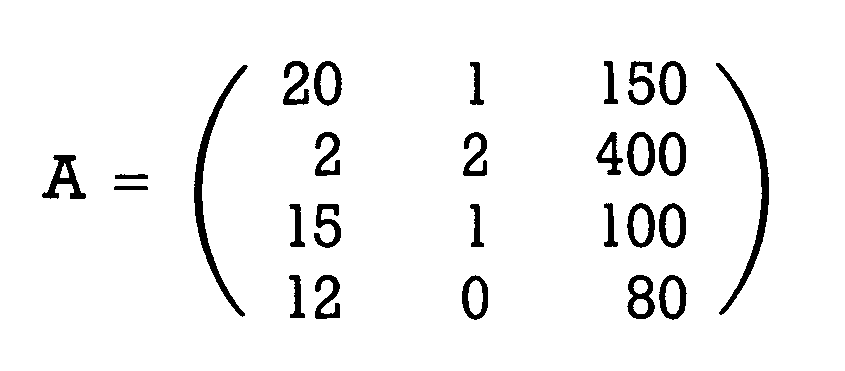
Es gibt verschiedene Schreibweisen für Matrizen. Die in Bild 1 — mit runden Klammern und einem Großbuchstaben als Namen der Matrix — ist weit verbreitet und wir werden sie im folgenden verwenden. Unsere Matrix hat 4 Zeilen und 3 Spalten. Man spricht dann von einer 4,3-Matrix. Will man nicht eine ganz konkrete, / sondern eine allgemeine 4,3-Matrix angeben, dann verwendet man anstelle der Zahlen — wie allgemein in der Mathematik — Buchstaben, an die Indices gehängt sind. In Bild 2 ist unsere Beispiel-Matrix auf diese Weise angegeben.
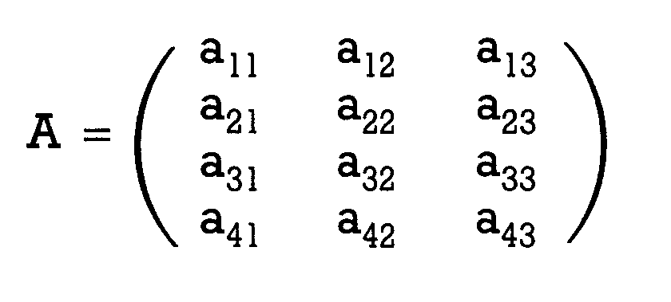
Der erste Index ist dann immer die Zeilennummer, der zweite die Spaltennummer. Jetzt wissen Sie, was eine Matrix ist, doch was man konkret mit diesen Gebilden anfangen kann, ist Ihnen vermutlich noch unklar. Sehen wir uns daher ein praktisches Beispiel an.
Matrizen = Tabellen
Matrizen kann man in vielen Fällen einfach als das mathematische Gegenstück zu Tabellen auffassen. Die Zahlenanordnung bleibt dieselbe. Man fügt einfach eine erklärende Kopfzeile und -spalte hinzu. So soll unser Beispiel aus Bild 1 eine Zusammenstellung der Einkäufe des Computerbenutzers Müller sein. Die Zeilen entsprechen den Monaten Januar, Februar, März und April (siehe Bild 3).
| Disketten | Farbbänder | Druckerpapier | |
|---|---|---|---|
| Januar | 20 | 1 | 150 |
| Februar | 2 | 2 | 400 |
| März | 15 | 1 | 100 |
| April | 12 | 0 | 80 |
Die erste Spalte gibt die gekaufte Menge an Disketten, die zweite die an Farbbändern und die dritte die an Druckerpapier an (diese Beispiele wurden angeregt durch das Buch: Müller-Merbach, Operations Research, Berlin/Frankfurt: Verlag Franz Vahlen 1969. Ein Buch, das kaufmännisch interessierten, potentiellen Matrizennutzern sehr zu empfehlen ist). Müller hat noch einen Freund Meier, der ebenfalls einen Computer mit Zubehör sein eigen nennt und dessen Einkäufe uns zusammen mit denen von Müller im folgenden das Verständnis von Matrizen erleichtern sollen. Meiers Einkaufsmatrix finden Sie in Bild 4.
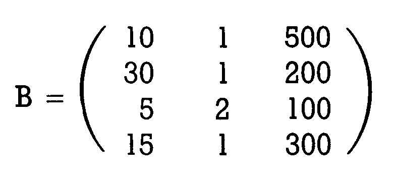
Sie sehen, daß Meier sehr produktiv ist. Das Element b(l,3) in seiner Einkaufsmatrix, nämlich 500 Blatt Computerpapier im Januar, deutet auf eine rege Korrespondenz hin. Aus der Bezeichnungsweise b(l,3) können Sie vielleicht schon ersehen, wohin das führt: Genauso werden ja in Basic die einzelnen Elemente von Arrays (Feldern) bezeichnet. Tatsächlich lassen sich Matrizen im Computer als zweidimensionale Arrays auffassen, ja im englischen Sprachgebrauch verschwimmen die Bedeutungen von »matrix« und »array«, sie smd in gewisser Weise fast Synonyme (Synonyme sind verschiedene Worte für denselben Gegenstand). Nebenbei bemerkt: Genauso, wie wir eindimensionale Arrays definieren können (beispielsweise durch DIM A$(20) gibt es auch Matrizen, wie die vergleichbare 1,20-Matrix oder die 20,1-Matrix. In diesen Fällen spricht man von »Vektoren«. Anders herum kann man auch Arrays mit mehr als 2 Dimensionen bilden. Ebenso gilt das auch für Matrizen. Wir beschränken uns aber im folgenden auf die zweidimensionalen Matrizen und Arrays.
Addieren von Matrizen
Aus unerfindlichen Gründen wollen Müller und Meier wissen, wie ihr gemeinsamer Verbrauch in den fraglichen Monaten war. Sie müssen daher ihre Einkaufsmatrizen zusammenzählen. Bild 5 zeigt Ihnen, wie das geschieht.
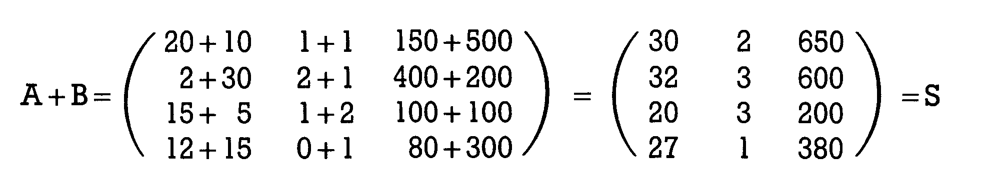
Es werden einfach alle Elemente mit gleichen Indices addiert. Allgemein sehen Sie die Addition in Bild 6.
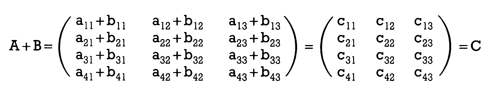
Wichtig ist: Man kann nur Matrizen gleicher Zeilen- und Spaltenanzahl addieren. Für solche, die es genau wissen wollen: Es gilt bei der Matrizenaddition das kommutative Gesetz (die Summanden können vertauscht werden):
A + B = B + A
Außerdem gilt das Assoziativgesetz. Das bedeutet, daß auch bei mehr als 3 Summanden die Reihenfolge beliebig ist:
(A + B) + C = A + (B + C) = A + B + C
Subtrahieren von Matrizen
Zum Abziehen zweier Matrizen voneinander braucht man eigentlich kaum Worte verlieren, denn das funktioniert genauso wie die Addition. Jeweils die Elemente mit gleichen Indices werden voneinander subtrahiert. Wollen unsere beiden Computerfreunde also wissen, wo ihre Verbrauchsdifferenzen liegen, dann bilden sie einfach A - B, wie in Bild 7 gezeigt.
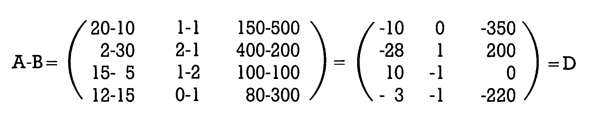
Meiers Verbrauch ist im Durchschnitt in diesen 4 Monaten höher gewesen als Müllers, wie man an den vielen negativen Werten in der Differenz-Matrix D sehen kann.
Man kann Matrizen also beliebig voneinander abziehen oder addieren. Allerdings ist es wichtig, sich immer der Bedeutung der Zeilen und Spalten bewußt zu sein. Wenn in der zu Meier gehörigen Matrix B die Spalten anders angeordnet sind (beispielsweise in der Reihenfolge Disketten, Papier und Farbbänder), hat es wenig Sinn, die Summe A + B zu bilden. Zuvor müssen beide Matrizen die gleiche Element-Anordnung aufweisen.
Multiplikation einer Matrix mit einem Faktor
Häufig kommt es vor, daß eine Matrix mit einer normalen Zahl malzunehmen ist. Will Meier bespielsweise wissen, wie hoch sein Verbrauch gewesen wäre, wenn er den dreifachen Zeitraum zur Verfügung gehabt hätte, kann er das Produkt bilden, wie in Bild 8 gezeigt wird.
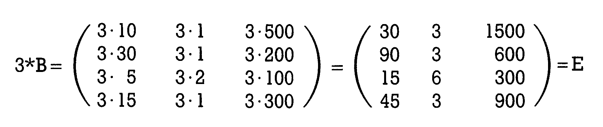
Jedes Element der Matrix wird mit dem Faktor multipliziert. Allgemein ausgedrückt, sehen Sie das in Bild 9.
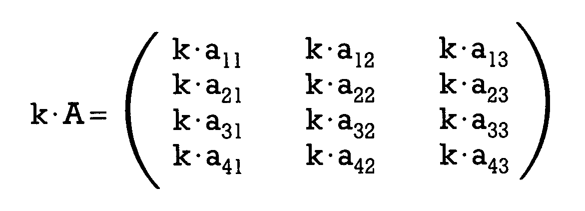
Wahrscheinlich werden Sie sich nun fragen, was denn nun der Vorteil diese Matrizen sein könnte. Herkömmliche Rechenverfahren schienen für die denkbaren Probleme ebenso einfach anwendbar zu sein. Bevor wir uns der Multiplikation von Matrizen untereinander zuwenden, soll Ihnen noch eine spezielle Sorte von Matrizen vorgestellt werden. Deren Bezug zur Grafik ist deutlicher als der jener anderen, wo wir erst im Laufe der nächsten Folgen die grafische Bedeutung erkennen werden.
Vektoren
Matrizen, die lediglich aus einer Zeile oder aber aus einer Spalte von Elementen bestehen, nennt man Vektoren (siehe Bild 9a).
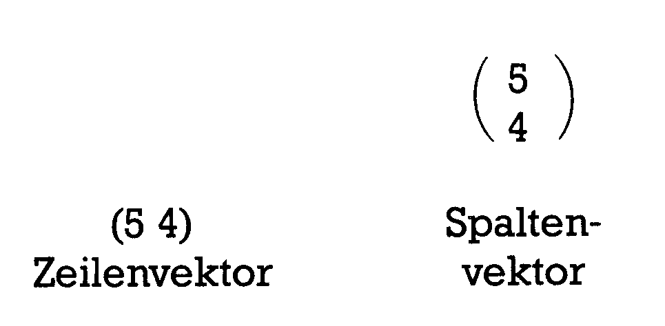
Wir werden im weiteren Verlauf dieses Kurses meistens Zeilenvektoren benutzen. Wenn wir also von Vektoren reden, dann meinen wir hier immer diese. Sollten mal Spaltenvektoren vonnöten sein, dann geht das aus dem Text hervor. Von Vektoren werden wir außerhalb dieses Abschnittes ohnehin nur recht selten reden (und hier nur, damit Sie diesen Begriff kennenlernen), denn ein Vektor wird rechnerisch genauso behandelt wie eine Matrix (genauer gesagt: In unseren betrachteten Zusammenhängen ist ein Vektor eine Matrix). Die beiden im obigen Beispiel genannten Vektoren sind dann einfach eine 1,2-Matrix (der Zeilenvektor) und eine 2,l-Matrix (der Spaltenvektor).
Das Feine an Vektoren ist, daß man sie recht anschaulich grafisch darstellen kann. So ist der im obigen Beispiel genannte Vektor (5 4) auch als Punkt in einem normalen Koordinatensystem aufzufassen (siehe Bild 9b):
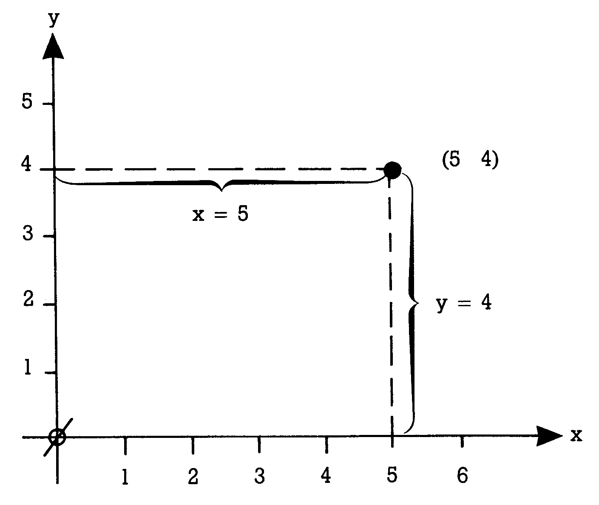
Ein Punkt im Raum, beispielsweise der Vektor (2 3 4), ist in Bild 9c gezeigt.
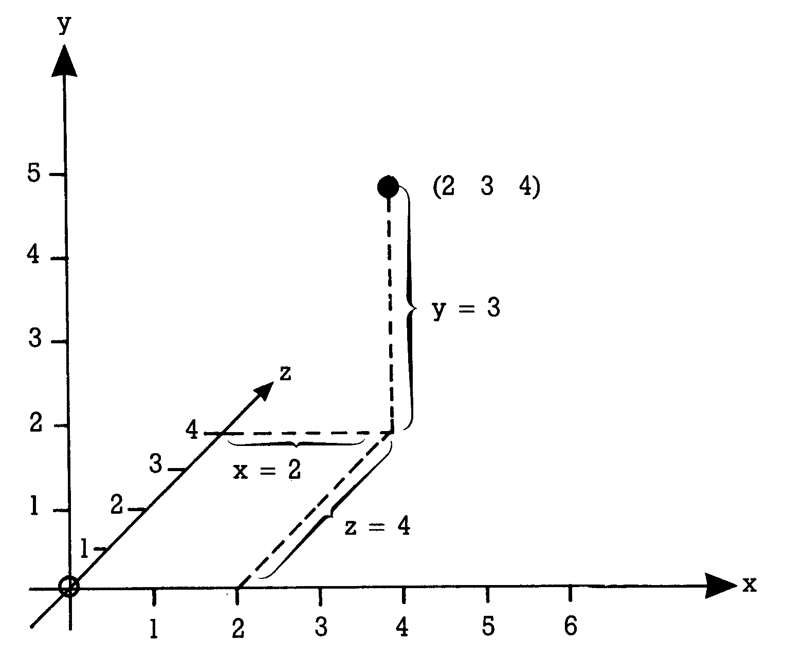
In der Physik wird ein Vektor etwas anders definiert als hier: Man versteht darunter eine gerichtete Strecke. Der Vektor ist dort festgelegt durch seine Länge und die Richtung. Daß unsere Definition auf dasselbe hinausläuft, daß also aus den Elementen des Vektors — wie wir sie angeben — ohne weiteres sowohl die Richtung als auch die Länge der Strecke festgelegt sind, soll Ihnen nun gezeigt werden. Wir verwenden dazu Bild 9d.
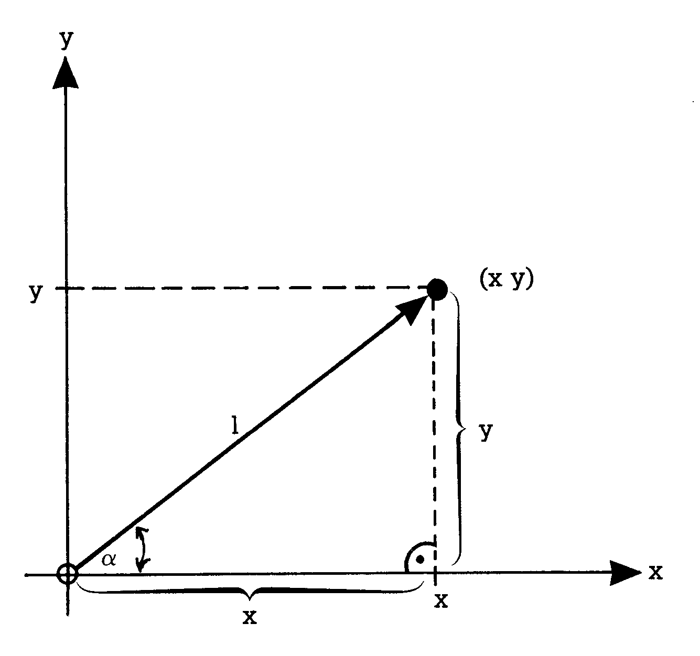
Die Länge des Vektors — der Betrag — ist die Länge der Strecke zwischen unserem Punkt und dem Koordinatenursprung. Es liegt ein rechtwinkliges Dreieck vor mit den kurzen Seiten x und y und der langen Seite 1, die identisch ist mit der gesuchten Länge. Nach Pythagoras gilt.
l2 = x2 + y2
Damit ist die Länge des Vektors festgelegt durch die Elemente unserer 1,2-Matrix (x y): 1 = SQR(x2 + y)
Als Richtung dieser Strecke kann man den Winkel alpha nehmen. In der nächsten Folge werden Ihre Kenntnisse — falls erforderlich — der Winkelfunktionen wieder etwas aufgefrischt werden. Deshalb soll hier nur kurz bemerkt werden, daß im rechtwinkligen Dreieck jeder Winkel durch Angabe zweier Seiten schon festgelegt ist. In unserem Beispiel gilt nämlich:
TAN(alpha) = y/x
Damit ist gezeigt, daß zwischen der herkömmlichen und unserer Auffassung eines Vektors kein grundlegender Unterschied besteht. Man kann sich daher die verschiedenen Operationen mit Vektoren auch grafisch ersichtlich machen. Wir wollen uns das an der Addition ansehen.
Dazu addieren wir zwei Vektoren (2 1) und (1 3)
Nach den eben gelernten Regeln der Matrix-Addition folgt als Ergebnis der Vektor
(3 4)
Das Bild 9e führt uns diese Summenbildung grafisch vor Augen. Hier wird nach den Regeln gearbeitet, die manche von Ihnen beispielsweise noch als »Parallelogramm der Kräfte« in Erinnerung haben.
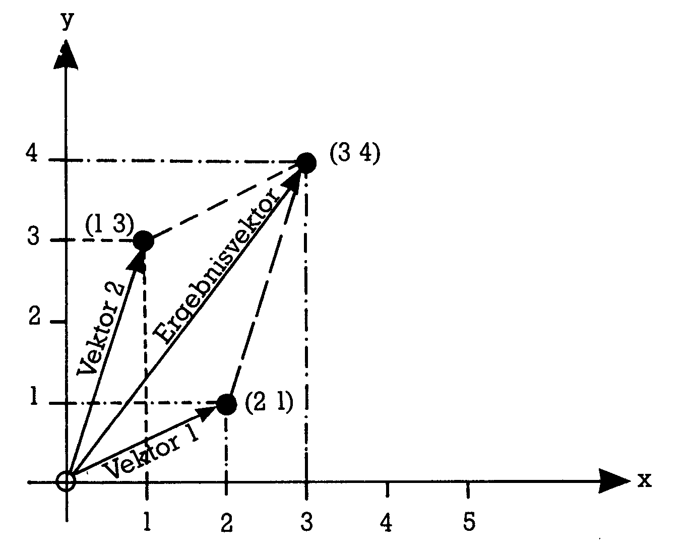
Der Ergebnisvektor wird konstruiert durch Parallelverschiebung der beiden Ausgangsvektoren. Ein anderes Beispiel zur grafischen Darstellung solcher Vektoroperationen ist die Multiplikation eines Vektors mit einem Faktor. Nehmen wir beispielsweise einen Vektor (2 3), den wir mit dem Faktor 2 malnehmen. Dann erhalten wir nach den Regeln der Matrixrechnung als Ergebnis den Vektor (4 6). In Bild 9f sehen Sie die grafische Entsprechung dieser Operation.
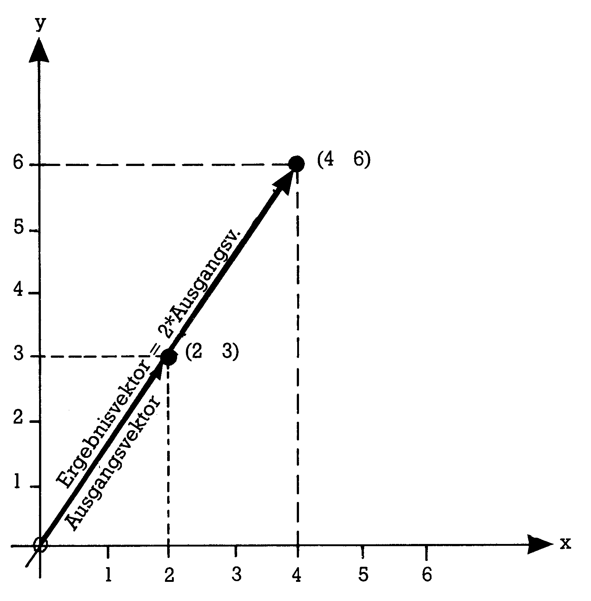
Wir werden von der nächsten Folge an die grafische Bedeutung von Vektoren ( dort nennen wir sie dann wieder 1,2-Matrizen) als Punkte ausgiebig behandeln. Dort wird Ihnen dann auch die Anwendung des nächsten Aspektes deutlicher werden. Mit solchen Punkten in der Ebene und im Raum zu manipulieren, erfordert die Anwendung sogenannter Transformationen (das hatten wir in der letzten Folge schon erwähnt). Transformationen aber sind nichts anderes als die Multiplikation von Vektoren (also auch Matrizen) mit Matrizen, die wir nun als nächstes behandeln werden.
Matrizenmultiplikation
Versuchen wir hier wieder zum Erklären unser Beispiel mit Müller und Meier. In der Kleinstadt, in der unsere beiden Freunde leben, gibt es zwei Händler, die Computerzubehör führen: Vorteil und Reibach. Beide Händler sind bereit, monatliche Zahlung mit ihren Kunden zu vereinbaren, vorausgesetzt, daß man alle 3 Warengruppen komplett bei jeweils nur einem von ihnen kauft. Müller und Meier müssen sich also entscheiden, bei welchem der beiden Händler sie im jeweils anstehenden Monat kaufen. Natürlich werden sie sich an den Preisen orientieren. Bild 10 zeigt eine Preistabelle beider Geschäfte.
| Vorteil | Reibach | |
|---|---|---|
| Disketten | 5,— | 6,— |
| Farbbänder | 38,— | 35,— |
| Papier | 0,08 | 0,07 |
Auch diese Tabelle kann man als Matrix, wir nennen sie die Preismatrix P, darstellen (siehe Bild 11):
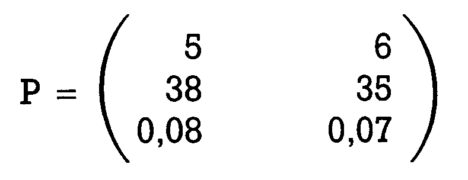
Wenn Meier ein vorausplanender Mensch ist, wird er nun vorher schon überlegen, in welchen Monat er bei Vorteil und in welchem bei Reibach kauft. Im Monat Januar ergäben sich für ihn bei Vorteil folgende Kosten: 20 Disketten mal 5 Mark plus 1 Farbband zu 38 Mark plus 150 Blatt Papier zu je 0,08 Mark. 150,00 Mark wäre die Summe davon. Bei Händler Reibach ergäbe sich:
20*6 + 1*35 + 150*0,07 = 165,50 Mark
Auf die gleiche Weise berechnet er nun die Kosten bei beiden Geschäften in den anderen Monaten und erhält folgende Tabelle (siehe Bild 12):
| bei Vorteil | bei Reibach | |
|---|---|---|
| Januar | 150,— | 165,50 |
| Februar | 118,— | 110,— |
| März | 121,— | 132,— |
| April | 66,40 | 77,60 |
Mit Ausnahme des Februars sollte Müller also bei Vorteil kaufen. Mit den Beispielrechnungen haben wir schon das Prinzip der Matrizenmultiplikation nachvollzogen: Die Zahlen einer Zeile aus der Matrix A wurden mit den Zahlen einer Spalte der Matrix P multipliziert und daraus die Summe gebildet. Auf diese Weise erhalten wir ein Element der Ergebnismatrix, die wir in Bild 12 als Tabelle dargestellt haben. So ergibt die Verknüpfung der ersten Zeile von A mit der 2. Spalte von P das Glied m(1,2) der Ergebnismatrix. M. Falk hat 1951 ein Schema vorgestellt, das für das Verständnis dieser Multiplikation vorteilhaft ist. Beide Matrizen und die Ergebnismatrix packt man in ein Schema wie in Bild 13 gezeigt.
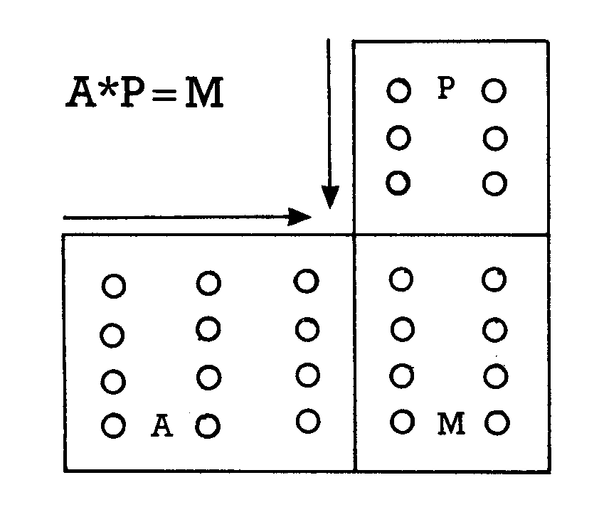
Auf unser Beispiel mit Herrn Müller angewendet, ergibt sich damit (ausführlich beschrieben zum Nachvollziehen) das Schema in Bild 14:
| 5 | 6 | |||
| 38 | 35 | |||
| 0,08 | 0,07 | |||
| 20 | 1 | 150 | 20·5 + 1·38 + 150·0,08 | 20·6 + 1·35 + 150·0,07 |
| 2 | 2 | 400 | 2·5 + 2·38 + 400·0,08 | 2·6 + 2·35 + 400·0,07 |
| 15 | 1 | 100 | 15·5 + 1·38 + 100·0,08 | 15·6 + 1·35 + 100·0,07 |
| 12 | 0 | 80 | 12·5 + 0·38 + 80·0,08 | 12·6 + 0·35 + 80·0,07 |
Bild 15 zeigt Ihnen die Matrizenmultiplikation nach Falk in allgemeiner Schreibweise:
| p11 | p12 | |||
| p21 | p22 | |||
| p31 | p32 | |||
| a11 | a12 | a13 | a11·p11 + a12·p21 + a13·p31 | a11·p12 + a12·p22 + a13·p32 |
| a21 | a22 | a23 | a21·p11 + a22·p21 + a23·p31 | a21·p12 + a22·p22 + a23·p32 |
| a31 | a32 | a33 | a31·p11 + a32·p21 + a33·p31 | a31·p12 + a32·p22 + a33·p32 |
Besonders dann, wenn Sie sich in Bild 15 einmal die Bildung der verschiedenen m-Elemente ansehen, fällt Ihnen sicherlich auf, wie sich die Indices der Faktoren a und p mit schöner Regelmäßigkeit verändern. Erinnern Sie sich außerdem daran, daß wir ein Element aus einer Matrix auch als Array-Element verstehen können, dann erkennen Sie sicher schnell, wie einfach derartige Rechnungen per Computer durchzuführen sind. Dazu kommen wir gleich noch. Damit Sie ein wenig mit diesem Prinzip zu arbeiten lernen, führen Sie bitte dasselbe an der Kostenrechnung von Herrn Meier durch. Sie haben also folgende Rechnung zu vollziehen.
N = B * P (N sei die Ergebnismatrix von Meier, B ist seine Planung (siehe Bild 4), P ist die Preismatrix aus Bild 11). Wenn wir alle richtig gerechnet haben, dann sollten Sie als Ergebnis die Matrix in Bild 16 erhalten.
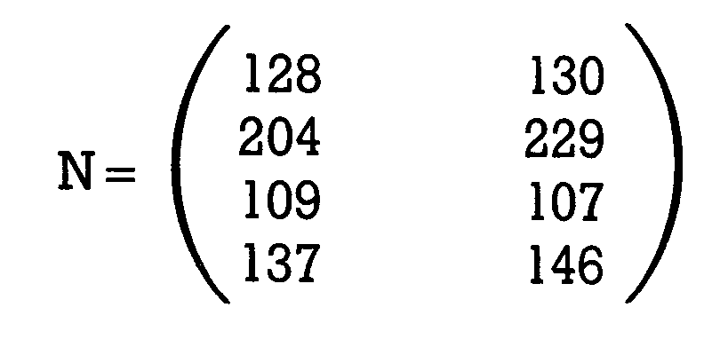
Lediglich im März sollte Meier bei Reibach kaufen, ansonsten ist der Kauf bei Vorteil für ihn von Vorteil. Bei all dieser Rechnerei werden Ihnen folgende Eigenarten schon aufgefallen sein (wir gehen mal von N = B * P aus): N hat genausoviele Zeilen wie B und ebensoviele Spalten wie P.
Eine Multiplikation ist nur dann möglich, wenn die Anzahl der Spalten von B gleich der Anzahl der Zeilen von P ist. Das sollte einleuchten: Für jede Warenanzahl in B (also beispielsweise 10 Disketten) muß auch ein Preis angegeben sein, wenn man die Rechnung überhaupt durchführen will.
Bisher nicht auffallen — weil wir mit Matrizen gearbeitet haben, bei denen eine Vertauschung zur Multiplikation nicht möglich war — konnte Ihnen die Tatsache, daß man die Reihenfolge der Matrizen bei der Multiplikation nicht verändern darf. Nehmen wir an, wir hätten Matrizen vorliegen, bei denen man die Faktoren vertauschen kann, dann gilt hier — im Gegensatz zur normalen Multiplikation — , daß A * B nicht gleich B * A ist! Nehmen wir mal zur Übung zwei einfache Matrizen (siehe Bild 17):
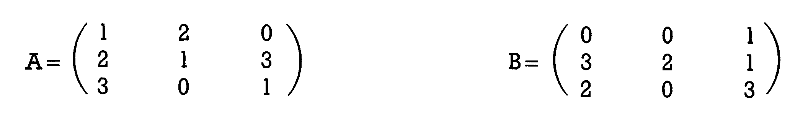
Versuchen Sie nun mal beide Multiplikationen mittels des Falk-Schemas durchzuführen, also zu rechnen A * B und auch B * A. Ihre Ergebnisse sollten nun die aus Bild 18 sein.
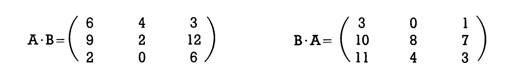
Programm zur Matrizenmultiplikation
Sie sehen, das ergibt unterschiedliche Ergebnismatrizen. Nun soll aber Schluß sein mit der Berechnung »zu Fuß«. Wir bringen unserem Computer die Matrizenmultiplikation bei.
Als Listing 1 finden Sie ein Programm »MATRIMULT« abgedruckt, das in der Lage ist, beliebige Matrizen miteinander zu multiplizieren.
Für die Besprechung des Programmes soll Ihnen als Hilfe das Flußdiagramm in Bild 19 dienen.
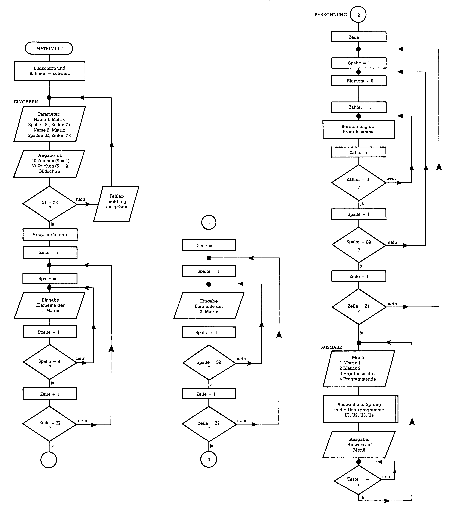
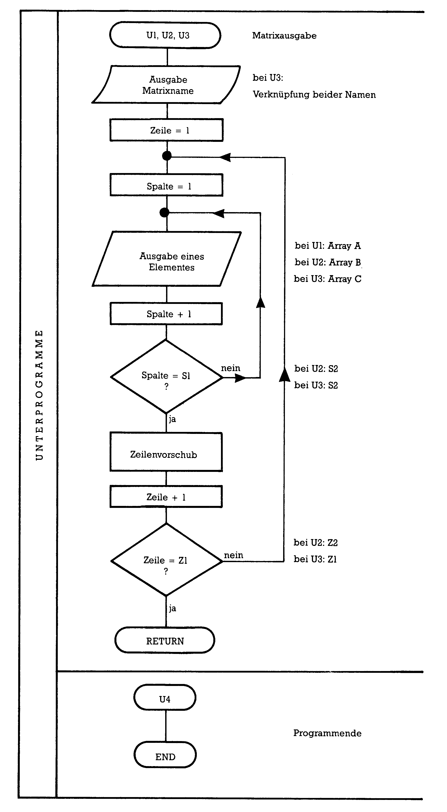
Sie sehen sicherlich bei der Betrachtung des Programmes, daß zum Kern — nämlich zur Berechnung des Matrizenproduktes — nur die Zeilen 330 bis 390 gehören. Alles andere hat lediglich mit der Ein- oder Ausgabe der Matrizen zu tun. Häufig sind die Elemente schon vorhanden (aus DATA-Zeilen oder sie sind berechnet worden oder ähnliches), wodurch man sich den ganzen Eingabeteil ersparen kann. Der Ausgabeteil ist ebenfalls oft unnötig. Die Ergebniswerte werden dann beispielsweise gleich für weitere Berechnungen gebraucht oder aber — was uns hier besonders interessiert — für grafische Ausgaben verwendet.
Bemerkungen zum Eingabeteil: Der ist in drei Schwerpunkten zu sehen. Für die Dimensionierung der Arrays (für die l.Matrix, die 2.Matrix und die Ergebnismatrix) brauchen wir Angaben über die Anzahl der Zeilen und Spalten (S1, Z1, S2, Z2). Außerdem ist es für die Ausgabe auf dem Bildschirm wichtig zu wissen, ob Sie mit einem 40-Zeichen-Bildschirm arbeiten (C 64 und C 128) oder mit einem 80-Zeichen-Monitor (C 128). Je nach Eingabe wird ein Multiplikator S erzeugt, der später mit der TAB-Funktion die Verteilung der Elemente einer Zeile auf dem Bildschirm organisiert. Wichtig ist die Prüfung auf die Zulässigkeit der Multiplikation, die den zweiten Schwerpunkt bildet zusammen mit der Definition der Arrays. Sie erinnern sich: Eine Matrizenmultiplikation ist nur dann definiert, wenn die Anzahl der Spalten des ersten Faktors mit der Anzahl der Zeilen des zweiten übereinstimmt. Der dritte Schwerpunkt besteht aus zwei Doppelschleifen zur Eingabe der Elemente beider Faktorenmatrizen. Der wichtigste, nämlich der Berechnungsteil, besteht aus drei ineinander verschachtelten Schleifen. Der äußere Zähler I (von 1 bis Z1) hängt mit dem Zeilenindex der Ergebnismatrix zusammen. Sie erinnern sich, daß die Ergebnismatrix die gleiche Anzahl Zeilen aufweist wie die erste Faktorenmatrix. Der Zähler J dient als Spaltenindex der Ergebnismatrix. Diese weist ja die gleiche Anzahl Spalten auf wie die zweite Faktorenmatrix. Der innere Zähler K dient nun der Aufaddierung der einzelnen Produkte. K geht von 1 bis S1 (und weil S1 gleich Z2 sein muß, könnte man statt S1 ebensogut Z2 einsetzen). Sehen wir uns die Zeilen 350 bis 370 genau an und gehen wir davon aus, daß wir gerade die zweite Zeile von A mit der ersten Spalte von B verknüpfen, also das Element C(2,1) bilden. S1 sei gleich 3. Dann leisten diese drei Programmzeilen folgendes:
C(2,1) = 0 + A(2,1)*B(1,1) + A(2,2)*B(2,1) + A(2,3)*B(3,1)
Vergleichen Sie das nun einmal mit den markierten Stellen in Bild 15. Sie sehen, dies ist der entscheidende Algorithmus zur Matrizenmultiplikation. Vor jeder neuen Produktsummenbildung wird in Zeile 340 das zu den Indices gehörende Glied C(IJ) noch gleich Null gesetzt. Das ist hier eigentlich unnötig, denn bei der Definition der Arrays findet das schon automatisch statt.
Falls aber einmal der Berechnungsteil in einem anderen Zusammenhang verwendet wird, dient diese Operation der Sicherheit, daß nicht unter Umständen alte C(IJ)-Inhalte mitsummiert werden.
Zum Ausgabeteil: Die drei Unterprogramme (Option 1 bis 3) sind bis auf die Parameter und das angesprochene Array identisch. Etwas Vorsicht ist geboten, falls Sie einen 40-Zeichen-Bildschirm verwenden und Matrizen mit mehr als 10 Elementen pro Zeile ausgeben möchten. Durch die Ausgabe mittels TAB werden unter Umständen Elemente übereinandergeschrieben oder verschoben. Überhaupt sollte man sich immer dann, wenn die Elemente sehr unterschiedliche Längen aufweisen und/oder mehr als 10 Elemente pro Zeile vorhanden sind, eine andere Form der Ausgabe überlegen. Der Bildschirm faßt eben nur eine begrenzte Zahlenmenge auf einmal.
Matrizen und Transformationen
Auch wenn Sie geduldig bis hierher diese Folge durchgearbeitet haben, wird Ihnen vermutlich noch nicht ganz klar sein, welchen Schatz Sie da gehoben haben. Mit der Matrizenmultiplikation halten Sie den Schlüssel in der Hand zu allen Transformationen! Zur Erinnerung: Um irgendwelche Gebilde der realen Welt (in Weltkoordinaten) auf dem Bildschirm zeigen zu können (dann also in Bildschirm-Koordinaten), müssen wir eine Umrechnung vornehmen auf das Bildschirm-Koordinatensystem. Diese Umrechnung ist eine Transformation. Ebenso brauchen wir Transformationen, um dreidimensionale Formen auf dem zweidimensionalen Bildschirm abbilden zu können oder um Abbildungen zu drehen, zu verschieben oder zu verzerren und so fort. Die Ausführung einer Transformation ist nichts anderes als die Multiplikation einer Matrix, die Koordinatenwerte des abzubildenden grafischen Objektes enthält, mit einer sogenannten Transformationsmatrix. Die Ergebnismatrix enthält dann die gewünschten Koordinaten, die wir direkt zum Zeichnen verwenden können. Was man alles mit diesem Handwerkszeug in der Computergrafik anstellen kann mit Gebilden »vom Punkt bis zur 4.Dimension«, soll uns von der nächsten Folge an beschäftigen.
(H. Ponnath/og)